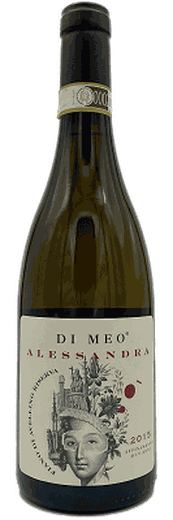
Alessandra
Fiano di Avellino
«questo vino porta il nome della madre di Roberto, Generoso ed Erminia Di Meo»
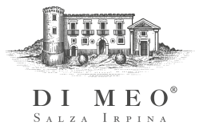
Salza Irpina · Irpinia
Dal 1986, solo uve autoctone nei tre areali DOCG dell'Irpinia: Fiano di Avellino, Greco di Tufo e Taurasi. Circa venticinque ettari, che comprendono un Casino di caccia del '700.
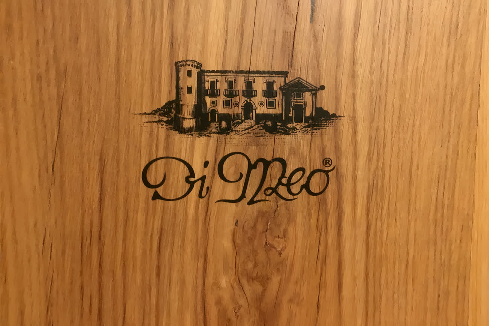
Il disegno della villa che sta su ogni etichetta, qui impresso a fuoco nel legno.
Il filo di questa cantina
Nella Linea Tempo, che raccoglie le Riserve, quattro etichette portano un nome di persona. Per tre di queste è l'azienda stessa a scrivere di chi si tratta.

Fiano di Avellino
«questo vino porta il nome della madre di Roberto, Generoso ed Erminia Di Meo»
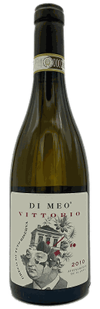
Greco di Tufo Riserva
«Il vino porta il nome del papà di Erminia, Generoso e Roberto Di Meo e del figlio di quest'ultimo»
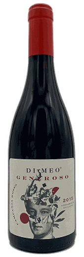
Campania Rosso IGT
«Don Generoso, dal nome del nonno di Erminia, Generoso e Roberto Di Meo»
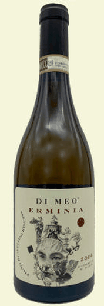
Fiano di Avellino
«nel tempo si è arricchito di complessità e valore affettivo, divenendo, infine, un doveroso omaggio. Produzione limitata e numerata»
E i nomi tornano anche fuori dal vino: la grappa Alessandrina, il brandy Don Vittorio, che «rende omaggio al papà dei fratelli Erminia, Generoso e Roberto Di Meo», e il liquore Ratafià di Nonna Erminia, «ricavato da un'antica ricetta di famiglia, gelosamente custodita».
Dai primi anni Ottanta a oggi
All'inizio degli anni '80 i fratelli Erminia, Generoso e Roberto Di Meo rilevano la storica azienda agricola dei genitori Vittorio e Alessandrina, a pochi chilometri da Avellino, nel comune di Salza Irpina. La proprietà, in passato appartenuta ai Principi Caracciolo, è circondata da lievi e ventilati declivi collinari, sui quali domina un caratteristico Casino di caccia del '700.
L'obiettivo dei tre fratelli è produrre vini a partire dalle varietà autoctone più diffuse in Irpinia (Fiano, Greco, Aglianico e Coda di volpe) e valorizzare il patrimonio di tradizioni culturali di cui sono ereditari. Vengono impiantati i vigneti e nel 1986 arrivano i primi vini di famiglia.
Oggi l'azienda è gestita da Roberto, enologo e responsabile commerciale, e da Generoso, promotore di «Di Meo Vini ad Arte»: anche questo, come il vino, un modo per celebrare il legame familiare con il territorio.
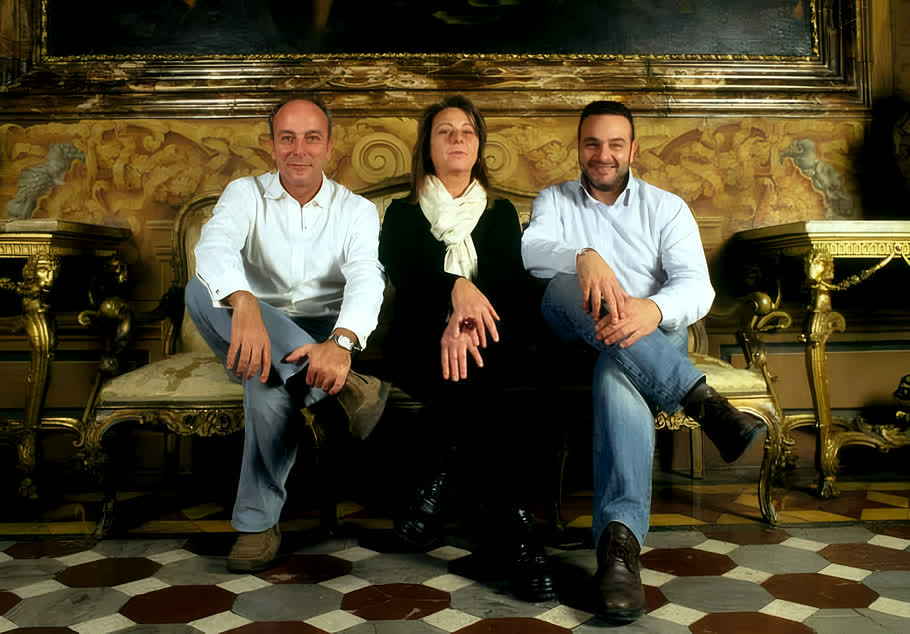
La fotografia che l'azienda pubblica accanto alla propria storia, nel punto in cui nomina «i tre fratelli».
Quindici etichette di vino, più grappe e liquori
«La produzione vitivinicola conta oggi 15 etichette, suddivise in due linee di prodotti: Tradizione e Tempo.» E i vini «si contraddistinguono per uno stile essenziale, sobrio, che richiede una buona dose di pazienza e un lungo affinamento in bottiglia».
La Linea Classica: i vini monovitigno simbolo dell'Irpinia, «espressioni immediate del terroir e dell'annata».
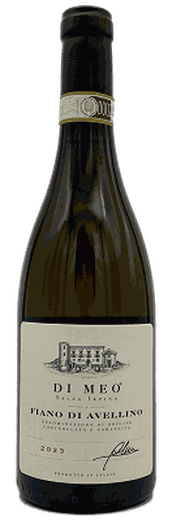
Fiano di Avellino
D.O.C.G. · Fiano 100%
Salza Irpina (AV)
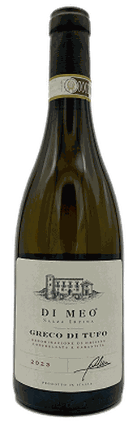
Greco di Tufo
D.O.C.G. · Greco 100%
Santa Paolina e Tufo (AV)
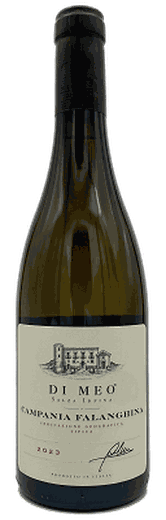
Campania Falanghina
Falanghina 100%
Guardia Sanframondi (BN)
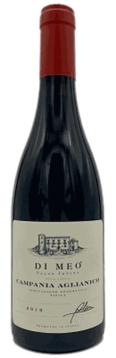
Campania Aglianico
Aglianico 100%
Montemarano / Mirabella Eclano (AV)
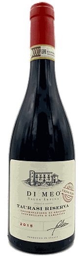
Vigna Olmo
Taurasi Riserva D.O.C.G. · Aglianico 100%
Montemarano (AV)
Le Riserve: «una sfida aperta e continua alle potenzialità di affinamento del Fiano principalmente, e delle altre varietà autoctone».
Alessandra
Fiano 100%
Vigna Alessandra, Salza Irpina (AV)
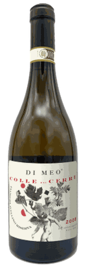
Colle dei Cerri
Fiano di Avellino D.O.C.G.
Vigna Colle dei Cerri, Salza Irpina (AV)
Erminia
Fiano di Avellino D.O.C.G.
Salza Irpina (AV)
Vittorio
Greco di Tufo Riserva · Greco 100%
Montefusco (AV), 750 m
Don Generoso
Campania Rosso I.G.T. · Aglianico 80% e Piedirosso 20%
Paternopoli (AV)
Due Taurasi Riserva. Il primo «rende omaggio a Sir William Hamilton, l'ambasciatore britannico che contribuì a rendere la Napoli di fine '700 una tra le mete più ambite del Grand Tour»; il secondo è «prodotto in collaborazione con il MANN».
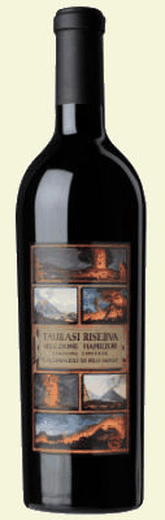
Hamilton
Taurasi Riserva D.O.C.G. · Aglianico 100%
Edizione limitata a 3.000 bottiglie
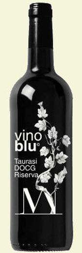
Vino Blu
Taurasi Riserva D.O.C.G. · Aglianico 100%
Montemarano (AV)
Uno spumante Brut da Greco e Fiano e un rosé Extra Dry da Aglianico.
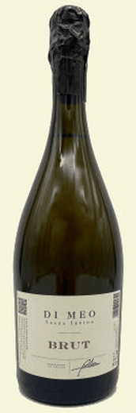
Di Meo Brut
Spumante Brut · Greco 65% e Fiano 35%
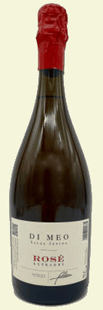
Rosé Extra Dry
Spumante rosé Extra Dry · Aglianico 100%
Mirabella Eclano (AV)
Grappe di singolo vitigno, un brandy con venticinque anni di invecchiamento e due liquori di tradizione familiare.
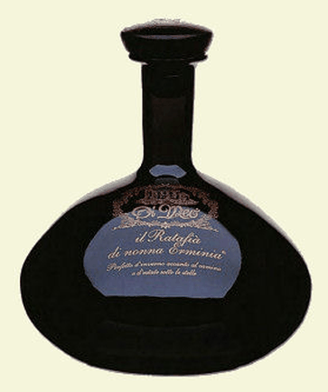
Ratafià di Nonna Erminia
Dodici erbe aromatiche e vino Taurasi
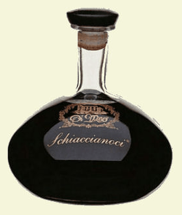
Schiaccianoci
Infuso di mallo di noci e vino Taurasi
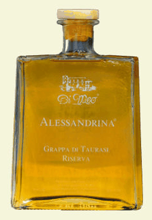
Alessandrina
Grappa di Taurasi Riserva · 43% vol.
60 mesi in barriques di ciliegio
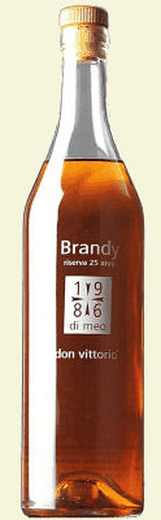
Don Vittorio
Brandy vendemmia 1986 · vinacce di Fiano
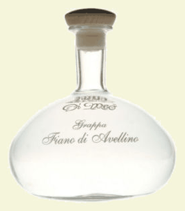
Grappa di Fiano di Avellino
43% vol. · 36 mesi in acciaio
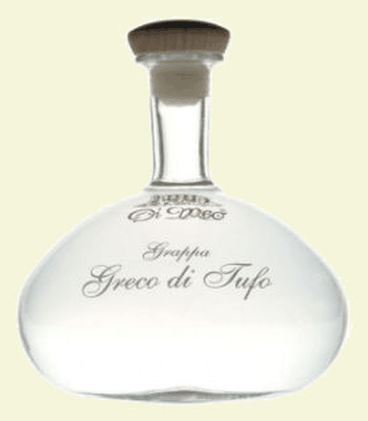
Grappa di Greco di Tufo
43% vol. · 36 mesi in acciaio
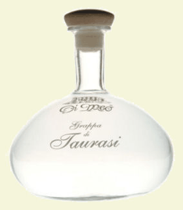
Grappa di Taurasi
43% vol. · vinacce di Aglianico di Taurasi
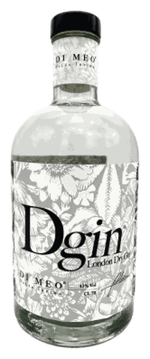
DGin
London Dry Gin
Una scheda per esteso
«Prodotto con le selezionate uve del vigneto di Fiano che circonda la cantina a Salza Irpina, questo vino porta il nome della madre di Roberto, Generoso ed Erminia Di Meo. Leggera surmaturazione, raccolta manuale, macerazione sulle bucce, fermentazione a temperatura controllata e nove anni di affinamento, di cui otto in acciaio e uno in bottiglia.»
Riconosciuta nel 2026, l'annata 2015
Nello stesso anno Veronelli assegna alla cantina il diploma Tre Stelle Rosse, e Forbes Italia il Premio Speciale Pioneer di «Iconic Wineries 2026».
Circa venticinque ettari fra Salza Irpina e Parolise
«L'Azienda Agricola Di Meo, a 15 km a Est di Avellino, è situata tra i Monti Picentini ed il Partenio, nel cuore dell'Irpinia.»
Una collina di circa venti ettari che accoglie vigneti, alberi da frutto e piante. Oltre ai vigneti di Fiano, divisi in quattro parcelle, la proprietà conta più di 50 diverse specie arbustive ed arboree: querce, pioppi, pini, cipressi, salici, acacie, aceri, eucalipti, mimose, mandorli, meli e ulivi.
Un raro esemplare di vite prefillossera, una pianta di Aglianico della fine del XIX secolo allevata secondo l'antico sistema a «tennecchia avellinese», è ancora in produzione. C'è anche una vasca di raccolta di acqua surgiva della metà del '700.
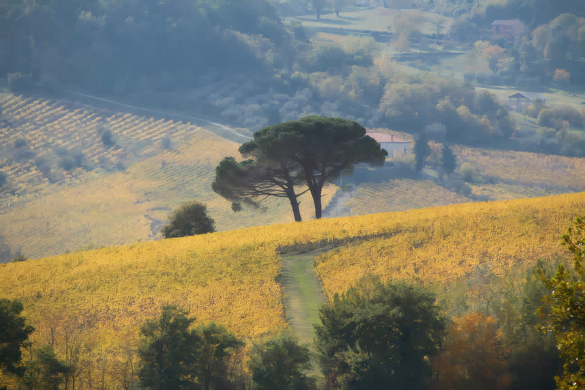
La vigna in ottobre.
Edificato nel XVIII secolo dai Principi Caracciolo, in un'area ricca di boschi e selvaggina, è «una meravigliosa testimonianza storica del principato borbonico in Irpinia». L'edificio, di stile sobrio e classicheggiante, si sviluppa su due livelli: il piano nobile e il pian terreno, che ospitava le aree di servizio e una piccola cappella.
Dopo un accurato restauro conservativo, la struttura è oggi una residenza di campagna, presidio dell'attività agricola e sede di eventi aziendali.
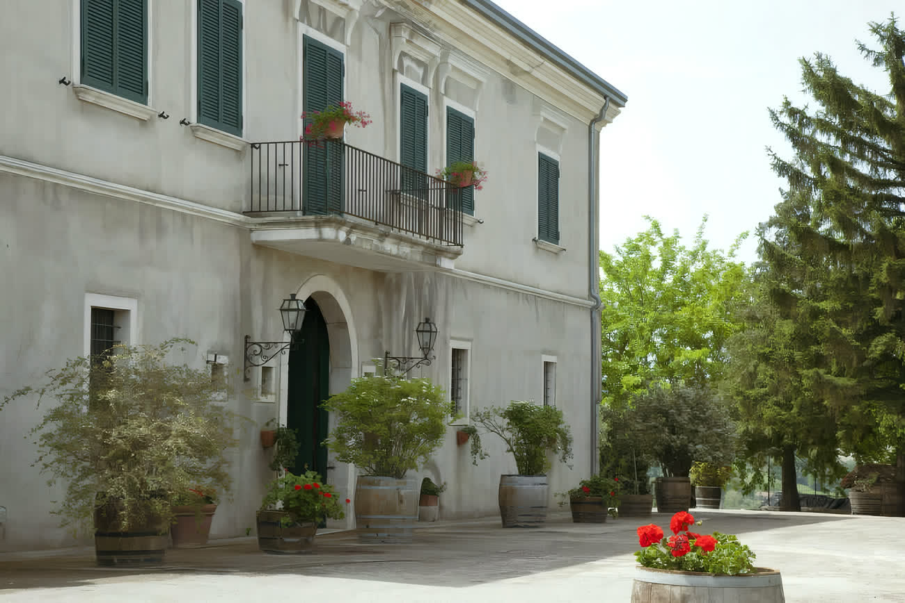
La facciata, dalla corte.
I serbatoi, «tutti in puro acciaio inox, di varie capacità e con controllo della temperatura», servono ai lunghi affinamenti dei bianchi della Linea Tempo. Si effettuano pressature soffici, con gas inerte per evitare ossidazioni; l'utilizzo dei solfiti è assai limitato e sono stati isolati lieviti specifici del Fiano e dell'Aglianico.
La bottaia è stata ricavata negli antichi sotterranei della tenuta, mantenendo l'originario impianto: qui botti, tonneau e barriques di rovere francese di Allier accolgono il Fiano e l'Aglianico.
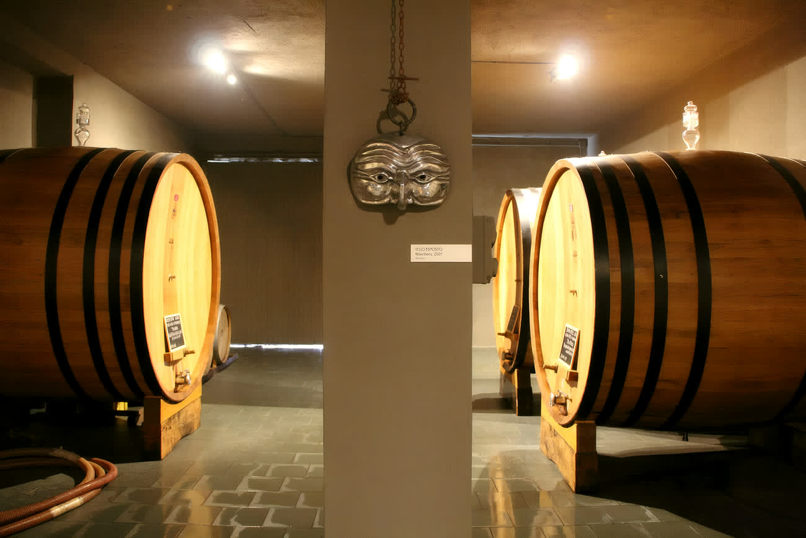
La bottaia, negli antichi sotterranei.
Solo uve autoctone
«L'azienda vitivinicola Di Meo alleva solo uve autoctone ed i vigneti di famiglia sono dislocati nelle zone più vocate dell'Irpinia, nei tre areali delle rispettive DOCG irpine.»
Diciotto fotografie
Tocca una fotografia per vederla grande.
Contrada Coccovoni, 1 · Salza Irpina (AV)